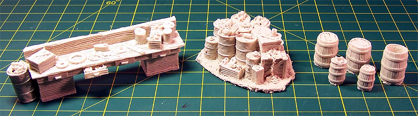
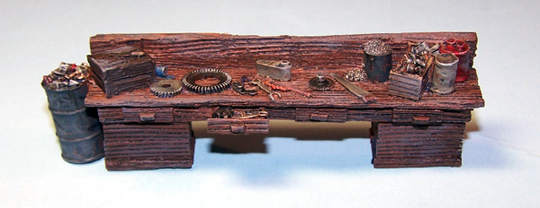

���
���
 ���
���
 ���
���
 ���
���

 ���
���
 ���
���
 ���
���

Rusty Rail Craftsman Kits and Castings
Images and text Copyright � 2006 by Matt Swan
������� In Fresno California there is this little cottage industry that produces
a variety of very unusual resin castings aimed at the model railroad industry.
This company, Rusty Rail, has been making work benches, out houses, sheds, boxes,
barrels and piles of junk in the common railroad scales such as HO and O. Now
you may be asking yourself right about now just what this has to do with model
aircraft building. A few modelers already are aware of this and now I will let
you in on the secret as well, O scale model railroad material is basically 1/48
scale. Are you starting to connect the dots yet? Where I�m going here is that
all these neat little O scale accessories fit perfectly into virtually any 1/48
scale diorama!
������� Rusty Rail has a pretty good selection of material already available
at some very reasonable prices and for the purposes of this review we will look
at three of the packages. In the image below at the left we have kit number RRWB-O-01
which is the larger of the work benches and sells for about $5.00 US (remember
� prices are subject to change as time goes by), in the center we have a junk
pile kit number RRJP-O-01 which is selling for about $6.50 and lastly on the right
is the drum kit number RRBS-O-02 and that sells for about $6.00. If you are already
buying accessory items to dress up a diorama just the selling prices should spark
your interest.

������� Even though these are designed for railroaders looking at that tool bench
we could easily be looking at an engine flywheel gear, maybe an air filter can
and tools that could have been used to work on an aircraft. Think about that junk
pile, if you added a propeller blade and/or an aircraft wheel there it would fit
into the background of any airfield service area. Those wooden drums would work
well and consider some of the other items available like an outhouse � no explanation
needed there. So all of this sound pretty good and I am anxiously waiting for
some sample pieces to arrive. Once Bill the mailman is out of sight I start ripping
packing material away to see how the overall quality of the parts look and I am
not disappointed.
������� The parts have no appreciable casting stubs or any noticeable flash.
I did find a few micro bubbles but have seen worse from main-line casting companies.
When the pieces are placed with other 1/48 scale items such as crew figures and
aircraft they seem to measure up well. The planking detail on the workbench seems
somewhat overdone but as this is not the main feature of a diorama but only background
material this does not seem to be much of an issue. The workbench is the first
pieces I choose for painting. It was cast with the backside being the pouring
surface and I sanded that slightly to just flatten the backside a bit. I could
not see or feel any mold release agent on the parts but just to be safe I washed
it in warm soapy water and let it air dry before heading to the paint room.
 ������� The part was primed with some Mr. Surfacer 1000 cut about 50% with lacquer
thinner and it took the primer very well. Base color was simply two coats of NATO
Brown airbrushed. Details were brush painted with various browns and metals with
a little color tossed in for some tool handles. Testors� silver was used for some
dry brush highlighting and a heavy coat of sludge wash was used. After this had
all dried down I sealed the piece with some Polly Scale clear flat followed with
some ground pastel chalks being rubbed on the wooden wear edges with an eye liner
swab. All that is left now is to place this with an aircraft model and a couple
of mechanics.
���
���
���
���
���
���
���